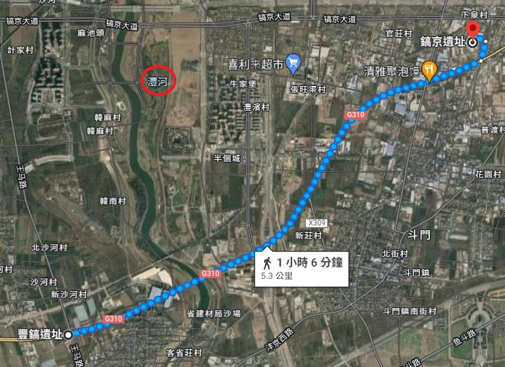

䷺ 渙卦 風水渙
渙亨，王假有廟，利涉大川，利貞。初六，用拯馬壯，吉。九二，渙奔其机，悔亡。六三，渙其躬，无悔。六四，渙其群，元吉。渙有丘，匪夷所思。九五，渙其汗，大號。渙王居，无咎。上九，渙其血，去逖出，无咎。
|
彖曰：渙亨，利涉大川，乘木有功也。（圖：小配） |
【卦名】
今本：渙 歸藏：奐 帛書：渙/奐 秦簡：渙 上博簡： 清華簡： 海昏簡：奐
《說文》：「渙，流散也。」段玉裁注：「分散之流也。《毛詩》曰：渙渙，春水盛也。《周易》曰：風行水上，渙。又曰：說而後散之，故受之以渙，渙者離也。」
渙原本為水流離散之狀，引申為渙散、離散。《雜卦》：「渙，離也。」《序卦》：「說而後散之，故受之以渙，渙者離也。」皆以渙為離散之義。
就卦象來看，渙為巽木在水上，下坎為水險，巽木以濟之。因此易學家又將渙之離散，詮釋為渙解險難。如孔穎達《正義》：
渙，卦名也。《序卦》曰：「說而後散之，故受之以渙。」然則渙者，散釋之名。《雜卦》曰：「渙，離也。」此又渙是離散之號也。蓋渙之為義，小人遭難，離散奔迸而逃避也。大德之人，能於此時建功立德，散難釋險，故謂之為渙。
或者解釋為民眾因險難而離散，如胡瑗《周義口義》：
渙者，是人心睽離，上下違散之謂也。亨者言上下所以渙散，故民所以睽離，蓋由道有所壅塞，志有所不通，是以渙散。
帛書易傳中的《繫辭》與《二三子》卦名作奐，輯本《歸藏》及海昏簡《易占》也作奐。上博簡卦名作，清華簡作。與可能就是奐的古字。渙為後出字，因此卦名當以奐為正。
《二三子》：「卦曰：『奐亓肝大號。』孔子曰：『奐，大美也。肝言亓內，其內大美，其外必有大聲問。』」《說文》：「奐，取奐也，一曰大也。从廾，夐省。」「取奐」不知何義，段玉裁注說「未聞」。「一曰大也」，這是一般奐字的用法，義近於大美的意思。古文獻中又作盛多、廣大義，應是從大美引申而來。如《禮記．檀弓》：「美哉輪焉！美哉奐焉！」鄭玄注:「奐，言眾多。」《詩經．卷阿》「伴奐爾游」毛亨注：「伴奐，廣大有文章也。」《說文》渙字所引毛亨注《詩經．溱洧》「方渙渙兮」為「春水盛」，似乎取盛大之義。
海昏簡《易占》：「奐者推也。彖南方十二餃北方七。庚午。下經廿九。蜼中夏卦吉，冬凶。」依李零說法，原簡推字的扌字邊有些模糊不清。推假借為焞，亦有盛義。然而，推有推移之義，義近於換，《易占》或取換之義。
《呂氏春秋．召類》記載，趙簡子將攻打衛國，派遣史默到衛國考察（史默即晉國史官蔡墨），史默回來之後回答說：「今蘧伯玉為相，史鰌佐焉，孔子為客，子貢使令於君前，甚聽。《易》曰：『渙其群，元吉。』渙者，賢也；群者，眾也；元者，吉之始也；渙其群元吉者，其佐多賢也。」「渙者賢也」似乎是從大美之義引申而來，大美其群，故賢者眾。
奐小篆從人從穴從廾（兩手相拱），其金文多用作人名，因此缺乏文字脈絡推斷其字義。但從形構來看，如〈獸叔盨〉銘文，上從人從丙，與更字（從丙從攴）有些相似，較大的差別在於更字下從單手，奐字下為雙手，若將上方的人字放到下方的手字邊，兩字更像。但金文中的更，又有上從兩丙者。以此推測，奐是否為換的本字，意思即更換、變更？
奐的另一相關字寏（音桓），vividict將〈師寏父盤〉銘文的（寏）釋讀為奐的本字。《說文》：「寏，周垣也，从宀奐聲。院，寏或从𨸏。」段玉裁注：「寏之言完也。」寏即今之院字，圍牆環繞的意思，又引申作庭院，或官廨，如若用作動辭，則是建築圍牆，如渙王居，可能就是此義。
【卦義】
渙的卦名當作奐，大美也。傳統則解釋為渙散、離散險難。
《說文》：「渙，流散也。」渙原本為水流離散之狀，引申為渙散、離散，這也是《雜卦》說的：「渙，離也。」《序卦》說的：「說而後散之，故受之以渙，渙者離也。」比喻於人事，則如崔憬所說：「人說，忘其勞死，而後可散之以征役，離之以家邦。」
就卦象來分析，似乎取渙義較為順理。取奐（大美）或煥者，可能是最早以坎為火（按：清華簡坎為火，離為水）的遺痕。
卦象下坎水，上巽木，水上有木之象。巽木為舟楫，水上巽木即渡水濟險，所以卦辭說「利涉大川」。此《繫辭》所說：「刳木為舟，剡木為楫，舟楫之利，以濟不通，致遠以利天下，蓋取諸渙。」水上浮木雖能救人，但漫無方向，因此渙卦可濟險但難成事。又坎是加憂，心病，巽風以散之，所以又有散心，釋疑，除去心病之象。坎為均布為法律，風吹而散之亂之，渙散、散亂而無法紀之象。

渙卦之道雖然可以濟險，有病亦可散之，得到緩解，但若是用於做事，則反而難成，必需注意心理的管理。如軍隊打仗，若軍心渙散、毫無軍紀，則必敗無疑。這也是為何渙卦之後接著是節卦，節就是節制的意思。得渙卦，危險可以渡過，但凡事需注意如何收拾渙散的人心。
在傳統的解釋裡，與渙卦很像的是解卦，兩卦都有化解危險的意思，但於手段與方式上有所不同。解卦是以震行，也就是積極的行動與作為來脫離危險。渙卦則是巽，以舟楫行水，也就是利用外力與智慧來渡險。
渙又與萃卦義相對，一散一聚，皆有「王假有廟」以會聚人心。
渙卦典故可能與武王遷鎬京有關。《易經》出現「王假」（王至，大王至臨）者有：家人九五王假有家，萃卦王假有廟，豐卦王假之，以及渙卦王假有廟。這些卦的王都是指周王。家人卦可能是古公亶父於岐下建立家室之事，萃則是古公亶父遷徙至岐下之前的宗廟聚眾，豐卦為文王建豐邑之事，從「渙王居」經文來看，那麼渙卦當指武王遷居至鎬京之事。
文王乏崇侯虎之後，建立豐邑。武王則在伐紂之後，建立鎬京，並於此建立王居，《詩經．文王有聲》所說的「宅是鎬京」。

↑ 豐邑在豐水之西，鎬京則在東。（圖：Google 地圖上的現今豐鎬遺址和鎬京遺址）
豐邑在豐水（灃河）之西，而鎬京則在豐水之東。卦象坎水上有震，震為東，艮為宮室，為渡水設居在東之象。大象為觀中有物，太廟祭祀之象。下坎為水，上巽為風為木，互體艮為山，有山有水有木有風，風景大美之象。
經文渙多數應當作取奐義，即大美。卦辭渙亨，大美而亨；九二渙奔其机當作奐賁其几，為大美而裝飾其几，講的是太廟祭祀設几之事。六三渙其躬為大美其身，六四渙其群為大美其群，渙有丘為大美其丘園；九五渙其汗當作奐其干，為大美其干盾，展開舞樂表演，大號則是音樂大作。渙王居為大美王居。渙其血，為太廟祭祀使用盛大的牲血。
渙，亨，王假有廟，利涉大川，利貞。
《彖》曰：渙亨，剛來而不窮，柔得位乎外而上同。王假有廟，王乃在中也。利涉大川，乘木有功也。
《象》曰：風行水上，渙，先王以享于帝，立廟。
大美，亨通，大王來到宗廟。利於渡大河，利於貞定。
君王到宗廟意謂有大事，集合眾人以敬告於鬼神，有凝聚人心的效用。利涉大川，有利於涉險行事的意思。
渙亨，傳統註解為離散解難而得亨通，王假于廟則是會聚離散之人心。如朱熹：「渙，散也，為卦下坎上巽，風行水上，離披解散之象，故為渙。又以祖考之精神既散，故王者當至於廟以聚之。」
《象傳》說：「先王以享于帝，立廟。」先王享祀天帝，建立宗廟。
【字義】
王假有廟：大王到了宗廟。假，通徦或格，至也，來到的意思。有，同于。帛書作「王叚于廟」，上博簡作「王叚于庿」。家人九五王假有家，萃卦王假有廟，豐卦王假之。
初六，用拯馬壯，吉。
《象》曰：初六之吉，順也。
整備的馬很強壯，吉。
傳統解釋為：以強壯的馬來拯救，吉。或：用以拯救馬傷，吉。
初爻，還有壯馬，都有「馬上」、「快速」的隱喻，言盡早、盡快拯救為吉。壯古文通傷，因此亦可解釋為拯救馬傷。
【字義】
用拯馬壯：拯，拯救。與明夷六二「夷于左股，用拯馬壯吉」同。明夷九二言大腿受傷，若有壯馬來拯救則吉。同理，此處的吉並非有所獲得或成就的吉，而是能夠化險為夷，平安逃難的吉。拯《子夏易傳》作抍，《說文》亦引作抍：「上舉也，从手升聲。《易》曰：抍馬壯吉。」「撜，抍或从登。」帛書作「撜馬牀」。徐鉉：「今俗別作拯，非是。」拯甲骨文作（丞），從廾從卩從凵，卩為跪坐的人，在坎洞（凵）中，有人伸出雙手（廾）拯救他，為拯的初文。卜辭中用作祭祀名，可能也是烝的初文。壯亦通傷，「用拯馬壯吉」為拯救馬傷而吉。李零認為，「用」為衍文，應作「拯馬壯吉」，上博簡及帛書本都無用字可為證。並將拯解釋為整，調訓之義，詳見其明夷六二及渙卦此爻註。《說文》所引亦缺用字，或可作為李零見解的另一證據。
九二，渙奔其机，悔亡。
《象》曰：渙奔其机，得願也。
盛大地裝飾其憑几，悔亡。
「渙奔其机」當作「奐賁其几」，《周禮》：「凡吉事變几，凶事仍几。」鄭司農：「變几，變更其質，謂有飾也。」鄭玄：「吉事，王祭宗廟，裸於室，饋食於堂，繹於祊，每事易几，神事文，示新之也。」
傳統注解言：渙散逃到一個可以倚身安歇的地方。
【字義】
机：几的俗字，古人休息時拿來依靠的憑几。引申為憑藉，憑藉以休息，比喻依靠、安歇、安全。《說文》：「几，踞几也，象形。」段玉裁注：「古人坐而凭几，蹲則未有倚几者也。几俗作机。」《左傳》：「設机而不倚，爵盈而不飲。」《莊子．齊物論》「南郭子綦隱机而坐」，成玄英疏：「隱，憑也。子綦憑几坐忘。」
渙奔其机：1. 奔通賁，帛書作「渙賁其階」。俞樾《群經平議》：「賁與奔古通用。《詩》鶉之奔奔《禮記．表記》引作鶉之賁賁是也。奔其机當作賁其机。」賁為飾，通鼖，也有大的意思。奐為大美，奐賁即盛大的裝飾。或者意指將「几」裝飾得很美麗的樣子。2. 俞樾認為，奔其机當作賁其机，賁用作僨，覆敗之義。賁其机猶言敗其机，敗其所依之義。以奔為賁是，但賁不必假借為僨。3. 傳統大致解釋為渙散奔逃到一個可安身之處，机比喻為安身之物。如王弼：「離散而奔，得其所安。」程頤：「若能奔就所安，則得悔亡也。」4. 虞翻則解釋為宗廟中設机：「渙宗廟中，故設机。」《周禮》：「司几筵掌五几、五席之名物，辨其用與其位。」鄭玄注：「五几：左右玉、彫、彤、漆、素。」《周禮》：「凡吉事變几，凶事仍几。」鄭玄注引鄭司農：「變几，變更其質，謂有飾也。乃讀為儴，仍，因也，因其質，謂無飾也。《爾雅》曰： 『儴，仍，因也。』《書．顧命》曰：『翌日乙丑，成王崩。癸酉，牖間南鄉，西序東向，東序西向，皆仍几。』」注曰：「玄謂：吉事，王祭宗廟，裸於室，饋食於堂，繹於祊，每事易几，神事文，示新之也。」卦辭言王假有廟，因此以虞翻注為最長，渙奔其机，為宗廟有吉事而設几變几，渙（奐）為大美，奔（賁）者飾也。
六三，渙其躬，无悔。
《象》曰：渙其躬，志在外也。
大美其身，無悔。
【字義】
渙其躬：躬，自身。渙其躬，當作奐其躬，大美其自身。傳統注解為渙散其躬身，至於什麼是渙散其躬身？王弼說是「散躬志外，不固所守」，程頤則認為，其渙散危難只及自身，言其渙散之功很小：「豈能拯時之渙而及人也？止於其身，可以无悔而已。」朱熹則以躬為私：「志在濟時，能散其私，以得无悔。」
六四，渙其群，元吉。渙有丘，匪夷所思。
《象》曰：渙其群，元吉，光大也。
大美其群眾，大善而吉。大美於丘園，不是一般人所能想到的。
若渙解釋為渙散，此爻意思大致為：渙散群眾之險難，大吉。將群眾渙散至山丘，不是一般人所能想到的。渙卦講的是乘舟濟險之事，丘為高地可避水之患。
【字義】
渙其群：當作「奐其群」，大美其群，引申為得到群賢的輔佐。《呂氏春秋．召類》史默（即蔡墨）說：「《易》曰：『渙其群，元吉。』渙者，賢也；群者，眾也；元者，吉之始也；渙其群元吉者，其佐多賢也。」傳統註解以渙為散離險難，渙其群為散群眾之險，如王弼：「能散群之險，以光其道。」程頤注解為渙散之中而使天下能夠群聚：「天下渙散而能使之群聚，可謂大善之吉也。」朱熹將群理解為朋黨：「為能散其朋黨之象。」
渙有丘：當作「奐有丘」或「奐于丘」，大美於丘園，類似賁六五「賁于丘園」之義。古文有通于，如王假有廟，為王假于廟。
渙有丘匪夷所思：大美山丘，非常人所想的，言其美侖美奐讓人驚異。傳統解釋以渙為離散，全句的解釋非常分岐。一、離散其群的困難如山丘，不是平常人所能夠想得到的。丘與夷都是雙關語，山丘喻困難，夷是指平地，比喻簡單。兩句意思為，大有為者所能夠做的功業之大，以平常人的心胸、思維是無法理解的。《周易集解》引盧氏曰：「離其群侶，渙其群也。渙群雖則光大，有丘則非平易，故有匪夷之思也。」二、依王弼，讀作「渙，有丘匪夷，所思」，身擔渙散險難之大任，內心所思考的是仍有山丘沒有剷平，憂心仍然有很大的困難未平。丘喻指困難，匪夷即未平，夷為剷平：「為散之任，猶有丘虛匪夷之慮，雖得元吉，所思不可忘也。」三、朋黨散去之後又重聚為一大群，不是常人所能想到的。朱熹將前言「渙其群」解釋為散去朋黨，「渙有丘」為朋黨聚而成丘：「能散其小群以成大群，使所散者聚而若丘，則非常人思慮之所及也。」四、依程頤，為天下渙散，眾人離散之後，又能重新群聚，這般功業，不是一般人所能想到的：「方渙散而能致其大聚，其功甚大，其事甚難，其用至妙。夷，平常也。非平常之見所能思及也，非賢智孰能如是。」
九五，渙其汗，大號。渙王居，无咎。
《象》曰：王居无咎，正位也。
舞樂用的干盾裝飾美麗而盛大，音樂大作。大王的居所煥然一新，沒有罪咎。
依傳統注解，「渙其汗大號」意思大致為：危險的解除有如發汗，君王大舉號令天下。渙王居，朱熹解作渙散大王的積蓄。
世傳本經文作「渙汗其大號」，顯然文字錯置，當作「渙其汗大號」。首先，全卦前後經文除初爻之外皆採「渙其……」的句型：如六三渙其躬，六四渙其群，上九，渙其血。其次，根據出土資料，帛書作「渙其肝大號」，帛書《二三子》作「奐亓肝大○」，上博簡作「丌○大唬」，可見應是作「渙其汗大號」。上九言「渙其血」，此言「渙其汗」，文義更有連貫性。六四「渙其群......渙有丘」與此爻「渙其汗......渙王居」在句型上亦相近似。
【字義】
渙汗其大號：傳統註解大致意思為，渙散其汗，大聲號令。汗或比喻險難，或比喻號令。以汗比喻險難者，如王弼：「散汗大號，以蕩險阨者也。」孔穎達疏：「以汗喻險阨也。九五處尊履正，在號令之中，能行號令，以散險阨者也。」以汗比喻號令者，如王肅：「王者出令不可復返，喻如身中汗出不可反也。」朱熹《本義》：「汗，謂如汗之出而不反也。」王肅與朱子以汗比喻號令出而不反，但程頤以汗比喻政令之周浹，好似人發汗之後全身通暢：「當使號令洽於民心，如人身之汗，浹於四體，則信服而從矣。」朱熹於《語類》中又持程頤之說：「亦猶人身之汗，出乎中而浹於四體也。」
渙其汗：通行的《周易》爻辭作「渙汗其大號」，應作「渙其汗大號」為是。渙其汗可能有二義：1.大美其內。帛書《二三子》作「奐亓肝」，引孔子解釋：「奐，大美也。肝言亓內。其內大美，其外必有大聲問。」「奐其肝」為大美其內在，充實內在的美德。因為內在大美，因此表現於外時說話就很大聲。2. 當作奐其干，干，盾也，古時舞樂用干盾。奐其干，大美其干盾，準備舞樂。《尚書．大禹謨》：「舞干羽于兩階，七旬有苗格。」《周禮》：「司干掌舞器。祭祀，舞者既陳，則授舞器，既舞則受之。賓饗亦如之。」《文王世子》「學干戈羽籥於東序」鄭玄注：「干戈，《萬》舞，像武也，用動作之時學之。羽籥，《籥》舞，像文也，用安靜之時學之。」
大號：音樂大作。號，樂聲響起之義。《禮記．郊特牲》：「殷人尚聲，臭味未成，滌蕩其聲，樂三闋，然後出迎牲。聲音之號，所以詔告於天地之間也。」孔穎達疏：「聲是陽，故用樂之音聲，號呼告於天地之間，庶神明聞之而來，是先求陽之義也。」傳統注解以號為號令，詳見「渙汗其大號」註。
渙王居：即「煥王居」或「奐王居」，大美王居，讓王居煥然一新。或作「換王居」，更換君王的居所，指武王遷居至鎬京。傳統註解以渙為渙散，居的註解則相當分歧：1. 讀作「渙，王居」，居為居住、居其所的居。如荀爽：「布其德教，王居其所，故无咎矣。」此以渙為布其德教。王弼：「為渙之主，唯王居之，乃得无咎也。」程頤註大致上以王弼註進一步發揮。李光地亦支持此註：「渙王居，渙字當一讀，言其大號也，如渙汗然，足以通上下之壅塞，回周身之元氣，則雖當渙之時，而以王者居之，必得无咎矣。」2. 朱熹以居為居積，居積即積蓄，或所囤積的財物：「當渙之時，能散其號令，與其居積，則可以濟渙而无咎矣。」《日講易經解義》：「散其居積以濟萬民之命，則財散於上，民聚於下矣。」《尚書．皋陶謨》：「懋遷有無化居。」
上九，渙其血，去逖出，无咎。
《象》曰：渙其血，遠害也。
盛大其血祭，遠去而出，沒有罪咎。
傳統註解以渙為離散，此爻意思為：流了血，災難遠去，憂慮不在，沒有罪咎。
【字義】
血：《說文》：「血，祭所薦牲血也。」血原本為古代血祭所用的牲血、血祭。後指血液。傳統註解多用王弼註，以血為傷。王弼註解全爻曰：「最遠於害，不近侵克，散其憂傷，遠出者也。」孔穎達疏：「血，傷也。」朱熹：「血，謂傷害。」血亦可假借為恤，憂慮之義。亦可進一步引申，比喻為危險、險難。
逖：《說文》：「逖，遠也，从辵狄聲。逷，古文逖。」逖原義為遠，古文作逷，因此亦借為惕。孔穎達：「逖，遠也。」虞翻：「逖，憂也。」由於小畜六四有「血去惕出」，因此有些易學家認為逖當作惕，憂有，如朱熹：「逖，當作惕，與小畜六四同。」然而，《象傳》註說「遠害也」，易學家或以遠害即逖出之義，因此認為逖當解釋為遠，不可作惕解，如朱震：「逖，遠也，故曰渙其血，去逖出，无咎。一本作去惕出，巽為多白眼，有惕懼之象。然象曰遠害，當從逖矣。」
渙其血去逖出无咎：有各種不同讀法。一、作「渙其血，去逖出，无咎」，若以《象傳》註解來看，是以「渙其血」作一句，因此當作此讀。朱震：「先儒讀渙其血作一句，去逖出作一句，以《象》考之，當從先儒。」二，胡瑗讀作「渙其血去，逖出无咎」，義近於前面讀法：「獨遠其難，不與眾競，故渙其血去也。逖出无咎者，言既居卦極，而无位，是能獨遠于難，所以无咎也。」三、作「渙，其血去逖出，无咎」，如朱熹：「言渙其血則去，渙其惕則出也。」小畜九四有「血去惕出」，惕通逖，因此「血去逖出」當作一句。三、俞樾《古書疑義舉例》認為，經文應該是連兩個「血」字而脫去，當作「渙其血，血去逖出｣：「古人遇重文多省不書，但于字下加二畫以識之，傳寫因奪去耳。」此說亦見於《群經平議》。
渙其血：盛大其所用之牲血或盛大其血祭。《說文》：「血，祭所薦牲血也。」血為古代祭祀時所用的牲血，或以牲血舉行祭祀。甲骨文象皿中一點，一點即牲血。徐中舒《甲骨文字典》舉卜辭中幾種血字的用法：一、用牲法，祭所薦牲血。二、祭名。三、血室，為宗廟名。四、血子為祭祀對象。卦辭言王假有廟，則奐其血為盛大其所用之牲血或盛大其血祭。傳統註解，血為血液，比喻為傷害，或災難、險難。渙其血，有散血、流血的意思。如高亨，讀作「渙其血去」：「水流曰渙，因而血流亦曰渙，所施不同，其義無殊。血去，謂血流去其身也。」另也有人進一步演繹為放血的治病方法，放了毒血之後自然病除。
去逖出：遠去而出。逖為遠。去逖，離逖也，遠去之義，《尚書．多方》「離逖爾土」。
【彖傳】
《彖》曰：渙亨，剛來而不窮，柔得位乎外而上同。王假有廟，王乃在中也。利涉大川，乘木有功也。
渙亨，剛來而不窮：以卦變解釋卦義。渙卦是從否卦而來，否卦九四降至二為剛來，下卦坤變為坎，坎水常流而不窮，為剛來而不窮。
柔得位乎外而上同：否卦六二至四成渙，六四得位，為得位乎外。承九五之剛為上同。
王假有廟，王乃在中也：九五之君在中。王乃在中或指九二。觀為大艮，艮為鬼門，因此觀卦有太廟之象。渙為觀下有坎，坎九二為王至於廟。
利涉大川，乘木有功也：巽為木，坎為水。木在水上，有舟楫之利，乘木有功之象。《周易》「有功」之象可能有二，一是坎水在外或坎險之得解，因五多功，坎在外則陽爻成九五之功，如需《彖》「利涉大川，往有功也」，坎《彖》「行有尚，往有功也」，蹇《彖》「利見大人，往有功也」。解卦雖坎在內，但有出險之義，因此說「有攸往夙吉，往有功也」。另一則是舟行之象，如渙卦。渙為舟行水上說有功，反之，井卦巽木在坎下，舟無以行，說「未有功也」。